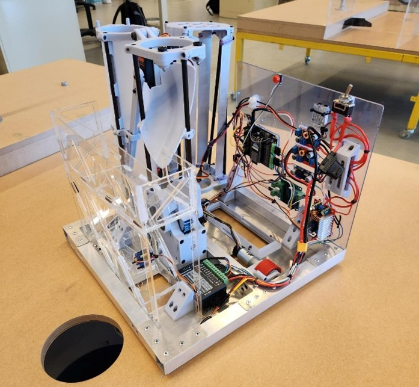
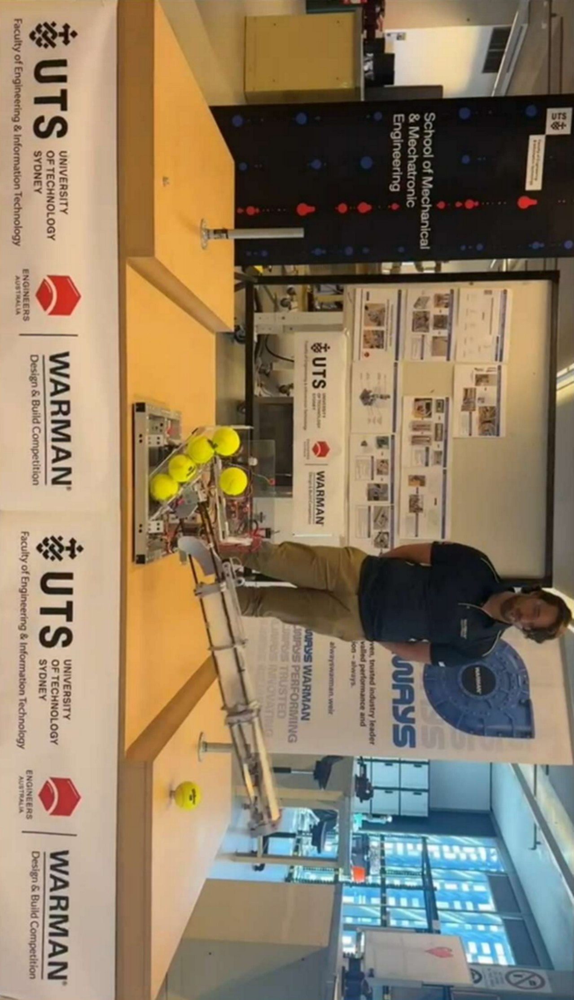
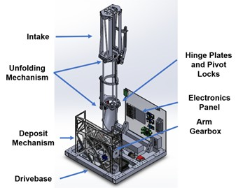
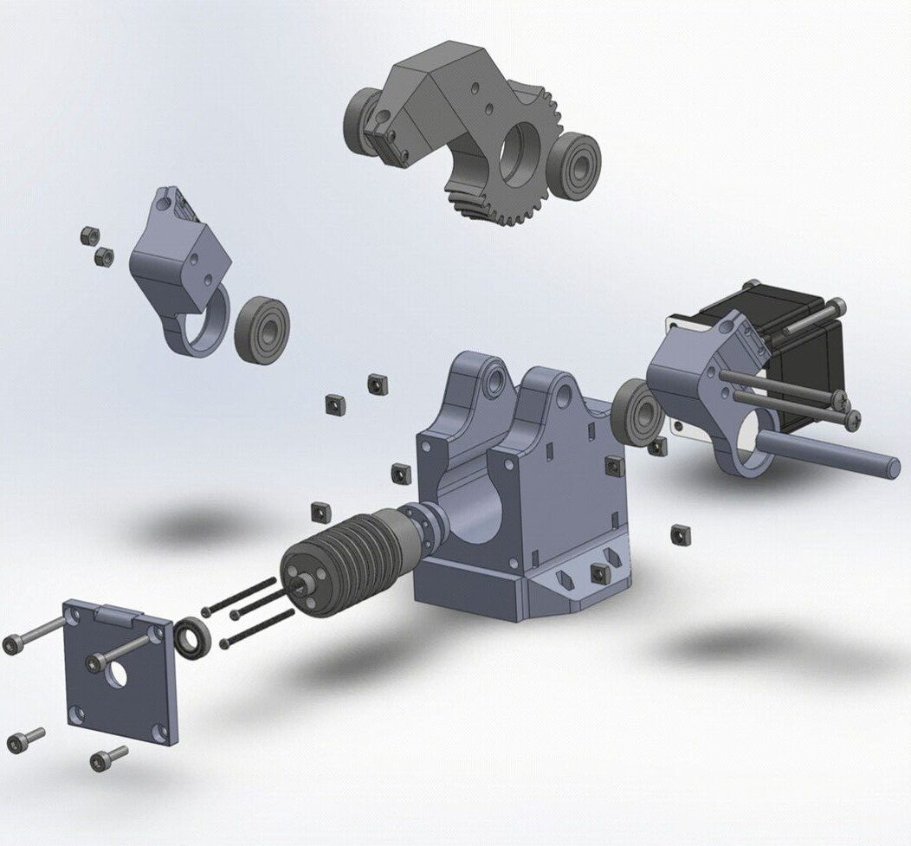

Led a team of three representing UTS at the international Warman finals. The 2024 task: autonomously collect and deposit six tennis balls from preset positions as fast as possible, competing against 15 universities across Oceania.
Competition run — Warman international finals 2024
The Warman Design and Build Challenge is a yearly international competition run by Engineers Australia for second-year mechatronics and mechanical engineering students. As team lead, I was personally responsible for the chassis, drivetrain, a custom 3D-printed worm-drive gearbox, the carbon fibre 900mm unfolding arm, and the electronics board.
The core principle was minimising degrees of freedom. Fewer actuators means fewer failure modes and simpler control. The final robot used just six actuators: two encoded DC gearmotors for drive, three servos for collection and deposit, and one stepper for the arm gearbox. A waterjet-cut tube-and-gusset chassis kept the structure stiff with a low centre of gravity.


Completed robot at the Warman international finals, UTS 2024
Precise straight-line motion is critical when collecting balls from fixed positions autonomously. The drivetrain used cascaded PID with velocity and differential steering feedforward terms, tuned against 500+ empirically generated data points mapping PWM to measured velocity, braking, and differential steering under load. The outer position loop driving an inner velocity loop gave consistent, repeatable moves with minimal overshoot at each pickup point.

Labelled SolidWorks CAD assembly
The arm deploys from stowed to 1m in under two seconds, then locks rigidly for ball collection. A custom 3D-printed worm-drive gearbox driven by a NEMA 23 stepper produces ~24Nm output torque and propels the arm 160 degrees in just over a second. The arm locks in the extended position using pneumatic push to connect fittings.

Exploded view of the 3D-printed worm-drive gearbox